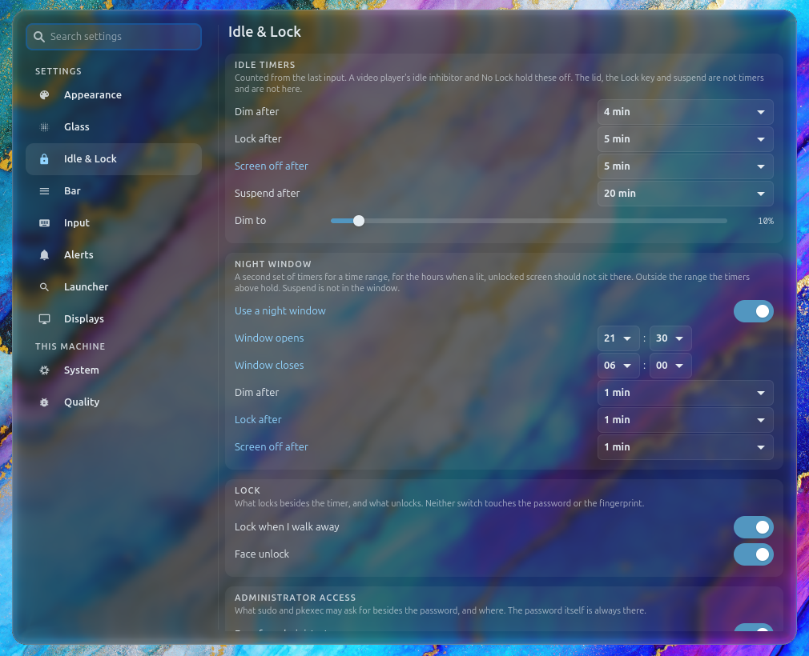
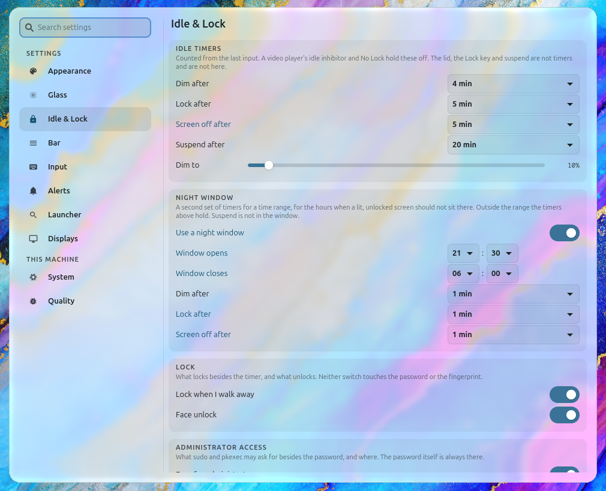
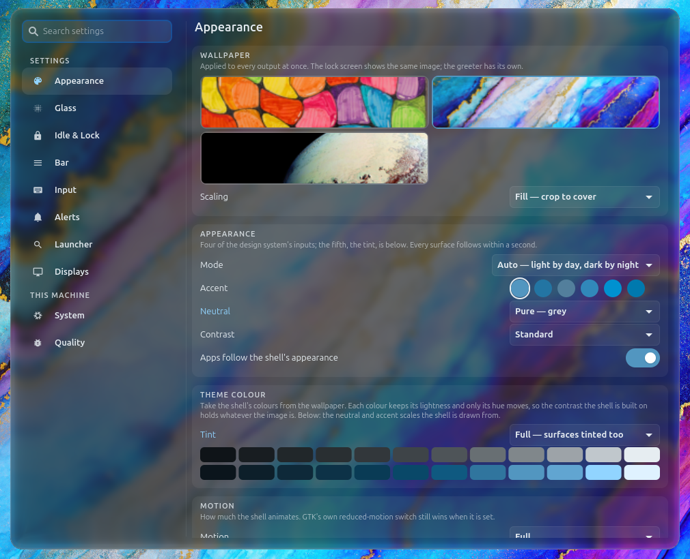

The design decisions of the 2026-09 polish pass (branch
design-polish) that had two genuinely good answers. Each
option was built for real and rendered by dev/render.sh
at 1440×900, scale 1, over the alcohol-ink wallpaper, in both modes
where the mode matters. The recommendation is applied on the branch;
the other option is one constant away, named under each decision.
Harness limits: scale 1 where the laptop runs at 2, and the nested
sway's blur stands in for the live session's liquid glass. Judge
layout and hierarchy here; judge the material on the live session.
Where a settings row's control sits settings
Does a dropdown or a switch sit at the far end of its row at its
natural width, or fill the row from a fixed label gutter?
Trailing recommended
The row reads label, then value, as a sentence does. The
control stands at the row's far end at its natural width, never
narrower than 220 px, so a column of dropdowns lines up on both
edges. What macOS System Settings, GNOME 47 and iOS all do.
Trade-off: a long label and its value sit at opposite ends
of a 690 px column; the eye travels. A very long dropdown label
("Auto — light by day, dark by night") breaks the left edge of the
column by its own width.

Idle & Lock, dark over wallpaper

Idle & Lock, light over wallpaper

Appearance, dark: swatches and a long dropdown label
Every control starts at one x, a form's column. A fixed 104
px label gutter, the control taking the rest of the row. The value
is always in the same place, and a wide dropdown shows its whole
label without moving. The shape settings had before this pass, on
the new row height and card width.
Trade-off: "4 min" stretched across 560 px reads as a form
field, and the control competes with the label for the eye; a
switch still sits at the far end, so the two kinds of row do not
agree on where the value is.
Is the deck a grid on a card the width of a launcher, or one strip on
a card as wide as the strip wants?
Grid recommended
A control centre that stands on the screen. The four
switches share one line at equal widths; the actions and the
session cluster take the next; every control stands at the tile
height. The card is 800 px, a launcher's width (Raycast,
Spotlight), so a result row is read at one glance and the empty
stage is a column, not a field.
Trade-off: the deck is two lines, 60 px taller, and the ten
one-click actions are no longer on the same scan line as the
switches.
Every action on one line. The switches, the actions and the
session cluster in one strip, and the card as wide as the strip
wants: about 1300 px at the tile height, 90 % of a 1440 output.
The strip wraps only on an output too narrow for it. The shape the
Helm had before this pass, with the deck's buttons brought to the
tile height.
Trade-off: the card spans the screen; launcher rows stretch
a title and a one-word subtitle across 1250 px, and the empty
stage is 1250 × 320 px of glass with nothing in it.
One row height in settings (--row-height-dense,
32 px): a switch row was 30, the rest 26, the sidebar 34. Every
reference puts a column on one step.
Row labels at body size (13 px): the size the row component's
own title has; label size (12) was a second body size for no reason.
The settings card at 980 px, not 1180: a sidebar and a 720 px
pane, the width a row is read across in one glance. Follows from
Trailing; with Fill it costs nothing either.
Deck buttons at the tile height: 44 px buttons beside 52 px
tiles were two heights in one strip.
A setting's launcher row says its name first, its pane and
group in the end slot, and a group named after its pane is said once
("Appearance › Mode", not "Appearance › Appearance › Mode").
The prefix list is scanned by the page: page name in a fixed
gutter, the prefixes beside it in mono, quieter.
A changed settings row is marked by weight as well as colour:
the accent at body size is under the text tokens' contrast floor, so
the mark needs a second channel.